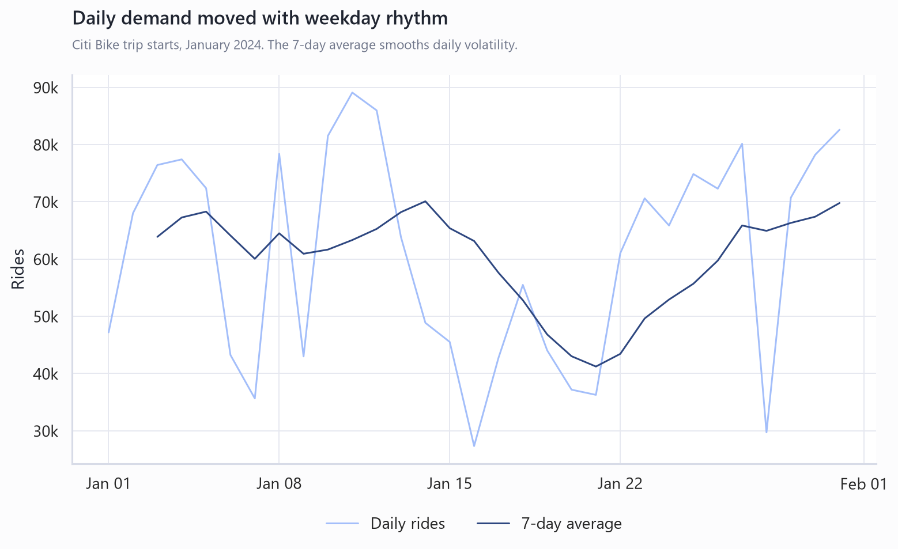
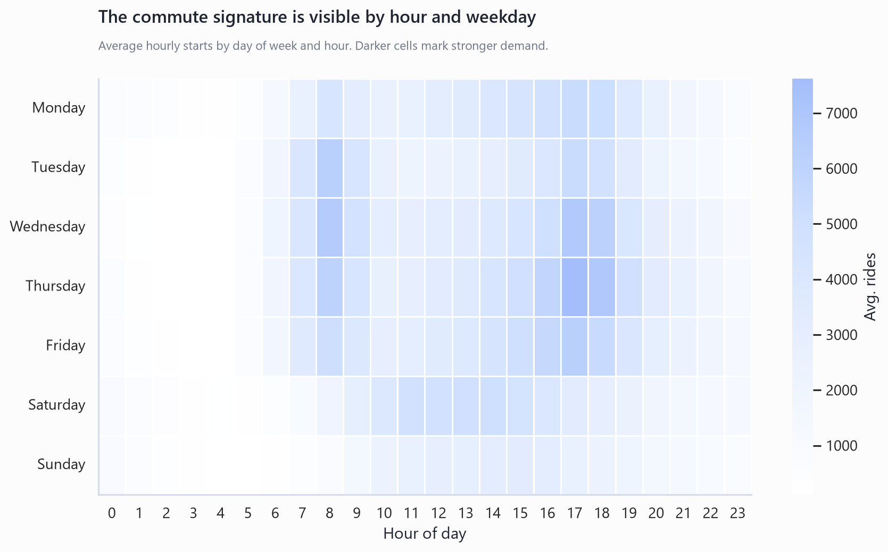
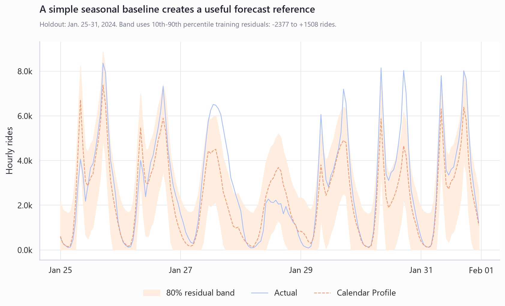
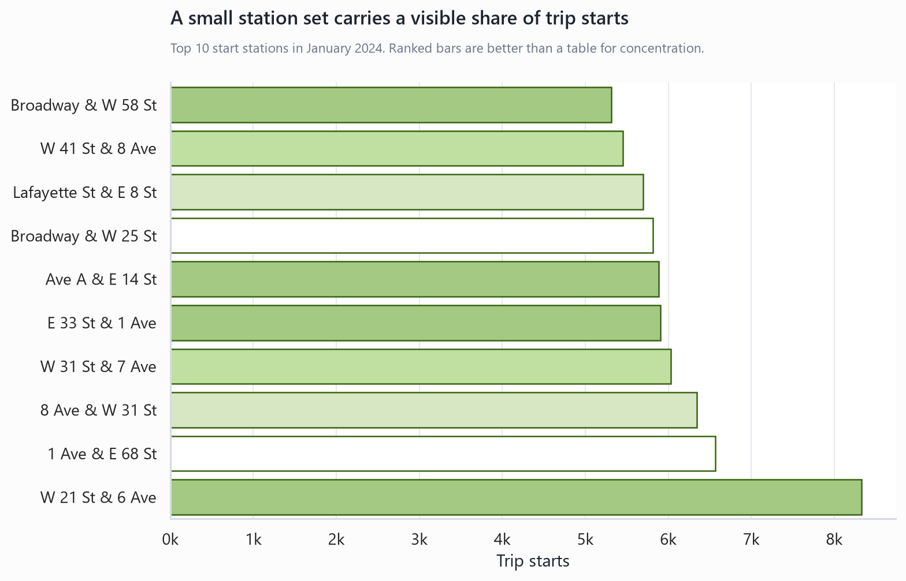

Citi Bike Forecast Showcase: Build Around Commuter Seasonality
Generated from Citi Bike January 2024 public trip history and Open-Meteo weather context. The report is decision-ready for the portfolio roadmap, not a production operating forecast.
Executive Summary
- Make the next iteration a station-aware forecasting story. The January profile proves a strong hourly demand rhythm: 1.89M starts across 744 hours, with rush-hour volume 2.23x off-hour volume and weekend hourly demand at 0.71x weekdays. The companion full-2024 proof now extends aggregate validation beyond this month.
- Use the calendar profile as the benchmark, not the finish line. The simple weekday/hour baseline beat the previous-day baseline by 20.5% on MAE and the previous-week baseline by 8.7% on MAE over the Jan. 25-31 holdout. The full-year proof then adds rolling origins and a stronger calendar-lag ridge benchmark.
- Turn the portfolio hook from aggregate demand into an operations question. The top station, W 21 St & 6 Ave, had 8,325 starts, and the top 10 stations represented 3.3% of valid trips. That is enough texture to motivate station clusters, rebalancing, and anomaly alerting as the next showcase layer.
The demand pattern is strong enough to justify forecasting
The core signal is calendar structure. January 2024 demand averaged 60,831 starts per day and 2,535 starts per hour, with the peak hour reaching 8,635 starts on 2024-01-11 17:00:00. The weekday/hour profile gives the project a clean analytical spine: it explains why a naive average is not enough, while keeping the first model interpretable.


The baseline gives the next model a useful target
The best first benchmark is the calendar profile. It forecasts each holdout hour from the training-period average for the same weekday and hour. That is simple enough to explain in a portfolio review, and it gives richer models a clear bar to beat before adding weather, holidays, lag features, station clusters, or gradient boosting.
| Model | MAE | RMSE | MAPE | Mean actual |
|---|---|---|---|---|
| calendar_profile | 796 | 1,075 | 36.2% | 2,908 |
| previous_week | 872 | 1,277 | 29.7% | 2,908 |
| previous_day | 1,001 | 1,581 | 56.3% | 2,908 |

So what: the project now has the aggregate full-year proof that this January report originally pointed toward. The next credible lift is station metadata, station clusters, and weather or event features tested inside the same rolling-validation loop.
Operational texture is the strongest extension path
Station and anomaly views turn this from a generic forecast into an applied decision story. The current output already identifies top start stations and abnormal hours. The largest flagged gap was -1,430 rides at 2024-01-18 12:00:00, but it should be treated as a descriptive anomaly until weather, event, station-status, or operations context is checked.

Recommendation: frame the next project decision around rebalancing or anomaly alerting. Those decisions naturally use the evidence already present: hour-level demand, commute peaks, station-level starts, simple forecasts, and explicit anomaly rows.
Recommended Next Steps
- Use the full-2024 proof as the aggregate benchmark. The project now has 12 months, a complete hourly panel, and rolling validation for aggregate demand.
- Add station IDs and station metadata before station-level forecasts. Station names are not stable enough for longitudinal modeling by themselves.
- Build a station-cluster or neighborhood forecast after the aggregate benchmark. Keep previous-week and calendar-lag ridge as benchmarks across rolling holdouts.
- Make anomalies explainable, not just detectable. Join severe weather, holidays, service status, and local event context before describing anomalies as operational causes.
Further Questions
- Which business decision should the forecast serve: staffing, rebalancing, rider communications, station planning, or anomaly alerting?
- What time convention should be treated as canonical for Citi Bike timestamps when joining weather and events?
- Which station metadata source should supply stable station identifiers and active-station periods?
Caveats and Assumptions
This report uses the local January 2024 Citi Bike profile artifacts as the authoritative computation source. It is source-backed for the portfolio showcase and directional for modeling strategy, but it should not be used as a production forecast without more months, rolling backtests, stable station IDs, and event or operations context.
Primary sources: Citi Bike public trip-history archive, Open-Meteo historical weather, the local analysis script, generated CSV outputs, generated chart PNGs, and the Citi Bike time-series semantic layer.